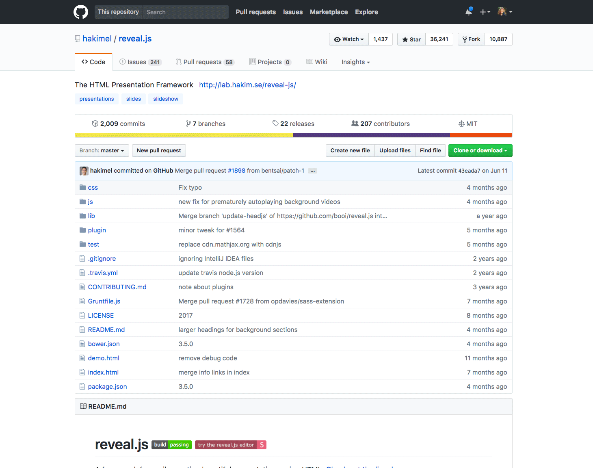
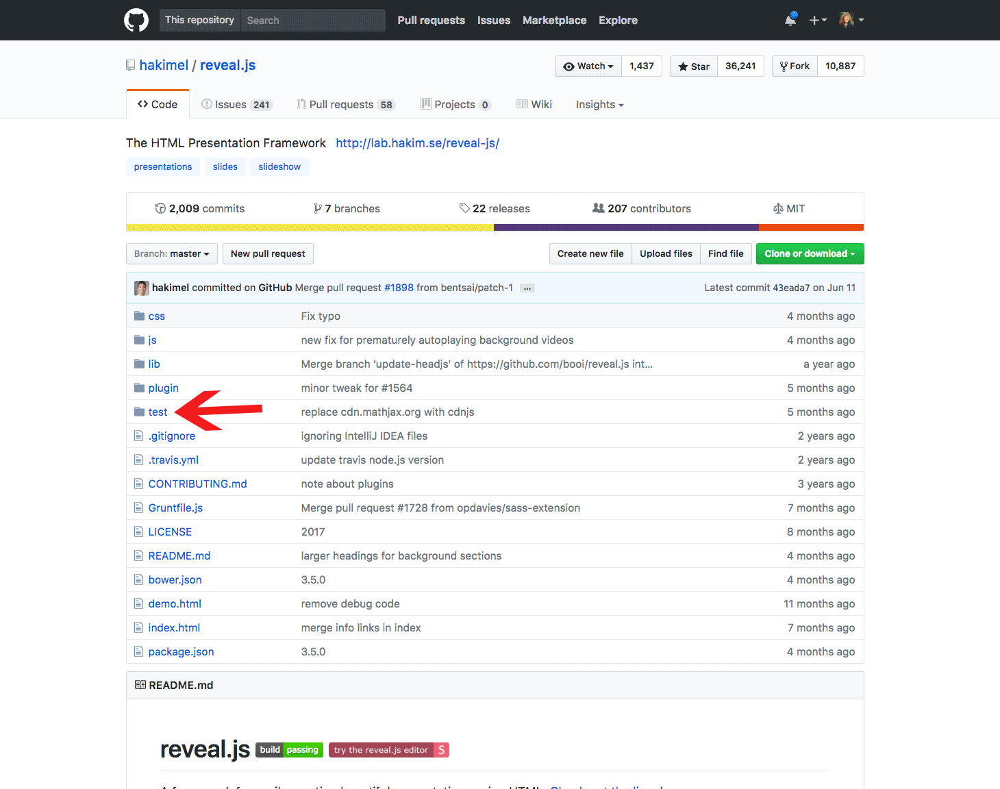
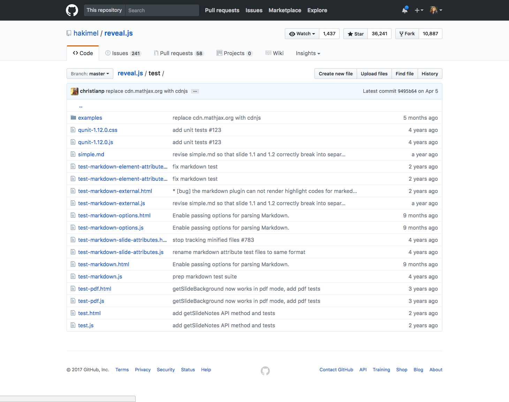
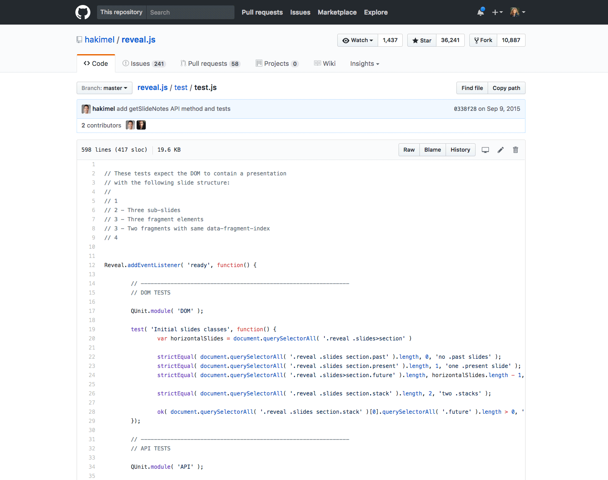
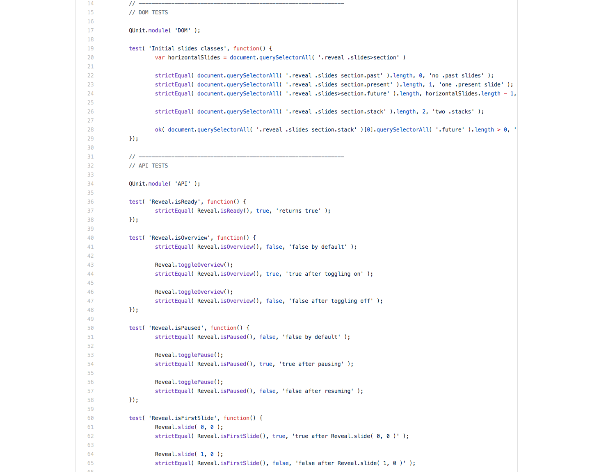
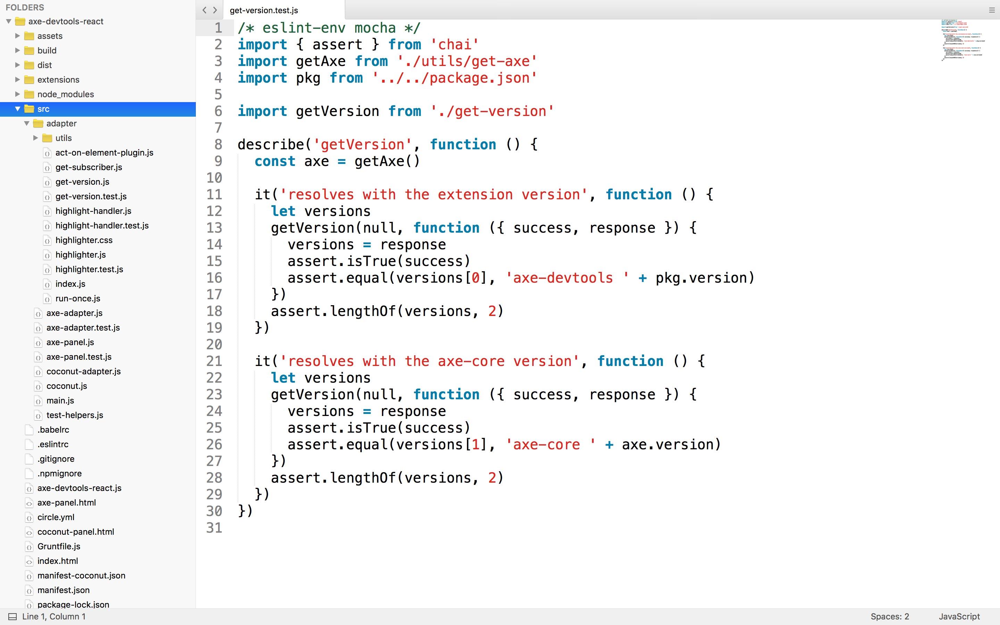
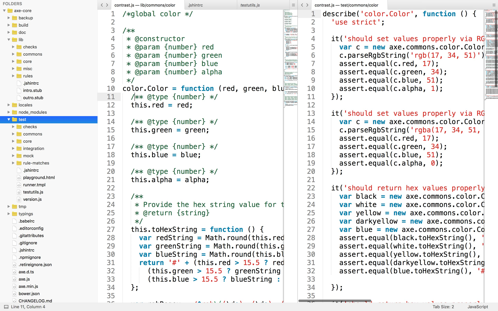

Seinfeld cast riding in a car
Shipping code
with humans, computers
Process
*whispers*
- Heydon Pickering
I don’t understand tests. If my code breaks, I get errors. I know already.
I don’t really understand tests either tbh 😂
- Una Kravets
What’s the Deal
with Testing?!?
Marcy Sutton – Senior Front-End Engineer, Deque Systems
http://marcysutton.com/smashingBCN17 – @marcysutton
Testing, you say?
- Why write automated tests?
- Do I really have to?
- How do I, even?
Designing software components
Maintaining Quality
Working with People
Documenting functionality
Making Bugs Easier to Find & Fix
The goal is to have a steady ratio of code to bugs and a healthy amount of time required to find them
Leveling Up
How I started





Manual vs.
Automated Testing
...or no testing?
🤔The human mind has limits. We can only remember so many things; we can really only concentrate on one thing at a time.
- Jeff Sutherland
People forget. Look at Home Alone. They forgot.
We need all the help
we can get.
Front-End Testing
- Accessibility support 👍
- Reusable components 👍
- Code that lives on 👍
- Stuff that breaks 👍
Prototyping
Where do tests live?
Testing tools word cloud
Test location examples in Sublime Text


It’s Meta!
How to Test?
Marky Markdown youtube test file
Testing types
Agile
Encourage ROI by:
👉 doing key testing first
👉 reducing redundancy
👉 automating effectively
Test the outcome,
not the implementation
Talk: How to stop hating your tests
http://bit.ly/stop-hating-your-tests
Arrange
Act
Assert
Inputs and Outputs
it('should generate a table with multiple columns and rows', () => {
const items = [['x', 'y'], ['a', 'b'], ['c', 'd']]
const result = AsciiTable.table(items)
expect(result).toEqual([
'╒═══╤═══╕',
'│"x"│"y"│',
'╞═══╪═══╡',
'│"a"│"b"│',
'├───┼───┤',
'│"c"│"d"│',
'└───┴───┘'].join('\n'))
})
Unit test qualities
- Test in isolation 👍
- Inputs: stubs/fixture data 👍
- Often headless 👍
- Fast changing of state 👍
Here’s a Unit Test
it('should take a node as a parameter and return an object', () => {
var node = document.createElement('p');
node.textContent = 'Do do do do doo....' +
'Bum bum bum bum bum, bum bum bum...';
var result = new DqElement(node);
assert.isObject(result);
});
Unit testing is a balance between development velocity and ROI
Ashley Williams 💭
Integration Testing
- In real browsers 👍
- Selenium Webdriver 👍
- Test common permutations 👍
- A little slower ✌️
Integration Test
it('should focus the next tab on [arrow right]', async function() {
const found = await helper.pressKeyUntil(this.driver, Key.TAB,
_ => document.activeElement.getAttribute('role') === 'tab'
);
expect(found).to.be.true;
await this.driver.executeScript(_ => {
window.firstTab = document.querySelector('[role="tablist"] > [role="tab"]:nth-of-type(1)');
window.secondTab = document.querySelector('[role="tablist"] > [role="tab"]:nth-of-type(2)');
});
await this.driver.actions().sendKeys(Key.ARROW_RIGHT).perform();
const focusedSecondTab = await this.driver.executeScript(_ =>
window.secondTab === document.activeElement
);
expect(focusedSecondTab).to.be.true;
});
Integration Use Cases
- Composing modules together
- Focus management
- Navigation
- Form validation
- Page-level functionality
There’s a gradient from unit to integration based on how many external things the test touches and how many of those you mock.
-Alex Early
Writing Testable Code
Code needs enough logic to test
var person = {
firstName: 'Kimmy',
get userName() {
return `@${this.firstName}`.toLowerCase();
},
set username (name) {
var fragments = name.toString().split('@');
this.firstName = fragments[1];
}
}
person.username = '@aretha';
console.log(person.firstName); // aretha
Code under test
must be portable
Tests shouldn’t require
one-to-one changes in code
Readable and compact
Snapshot Testing
Visual Snapshot Testing
Front-End Snapshot Testing Tools
- Jest
- React Storybook
- Storyshots
Use tools to focus manual testing on exact component states requiring human attention
Visual Testing — the pragmatic way to test UIs
Accessibility Automation
Low-hanging #a11y fruit
- Keyboard support*
- HTML markup
- ARIA attributes
- Color contrast
aXe Extension for Chrome
axe-core on npm
Testing with axe-core
var axe = require('axe-core');
describe('Component accessibility', () => {
it('should have no violations', (done) => {
var component = require('some-component');
axe.run(component, {}, (err, results) => {
expect(results.violations.length).toBe(0)
done()
})
})
})
Frame testing with axe-webdriverjs
var AxeBuilder = require('axe-webdriverjs'),
WebDriver = require('selenium-webdriver');
var driver = new WebDriver.Builder().build();
describe('Homepage accessibility', () => {
it('should have no violations', (done) => {
driver.get('https://localhost:3333')
.then(function () {
AxeBuilder(driver).analyze((results) => {
expect(results.violations.length).toBe(0)
done()
})
})
})
})
Accessibility Testing Tips
- Use your keyboard
- Test multiple states
- Can’t automate everything
Test and refactor as you go along, don’t get buried with technical debt
Recap
- Tests are important for teams
- Protect yourself from yourself
- Spend less time hunting down bugs
- Spend more time shipping code
- It’s about quality software